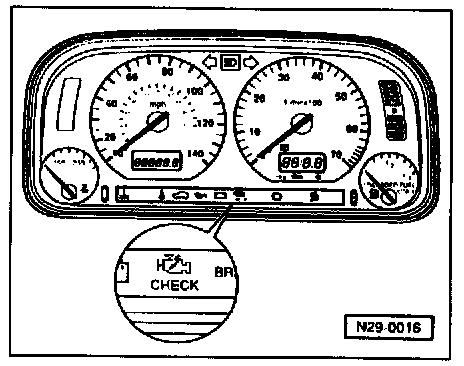
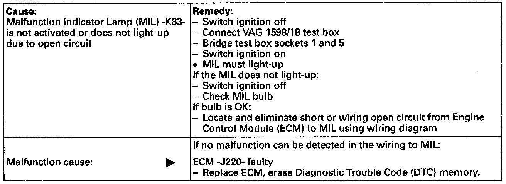
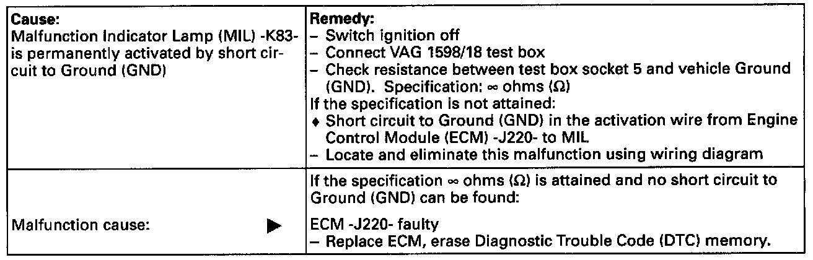

Malfunction Indicator Lamp (MIL)
If malfunctions are recognized and verified by the engine control module, they will be indicated by switching on the MIL.
Location of Malfunction Indicator Lamp (MIL).
NOTE:
The MIL can be switched on in the flashing or permanently on mode. The Diagnostic Trouble Code (DTC) memory must be checked in every case. Check DTC Memory (scan tool function 02)
- Flashing: There is a malfunction that can damage the Three Way Catalytic Converter (TWC) if driven in this condition. In this case, the vehicle must not be driven using wide open throttle, but with partial throttle only, during which the MIL is continuously illuminated rather than flashing.
- Permanently on: There is a malfunction which will increase exhaust emissions. Check engine and/or automatic transmission control modules.
- If the MIL does not light up: If there is an engine running problem, or a customer complaint of one, perform a functional check of the MIL. Then DTC memory must be checked because malfunctions that do not switch on the MIL immediately can also be stored,
Functional check:
- Switch ignition on.
- The MIL must light-up.
If the MIL does not light with ignition switched on:
- Check wiring to MIL as follows:

If the MIL lights with ignition switched on, continue check as follows:
- Start engine and run at idle speed: MIL must go out after a few seconds.
If the MIL does not go out:
- Check DTC memory. Check DTC Memory (scan tool function 02)
If no malfunction is stored:
